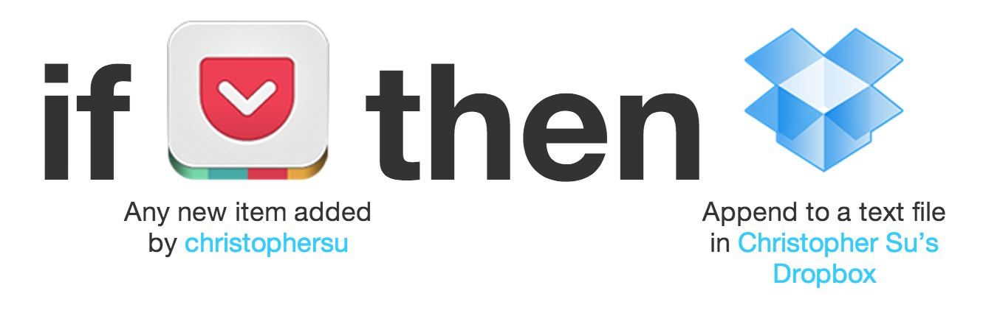

Saving Pocket Links to a New File Every Day using Dropbox, IFTTT, and launchd
March 27, 2013For the past year, I’ve been saving interesting links by copying and pasting their URLs into Markdown files in a Git repository that were then browsable through a Gollum wiki. I created a new file each day and just made an unordered list of links that I found on that day. There were a few problems with this method:
- While it was possible for me to create an automator action or something that would facilitate the process, I never bothered to do so and copying and pasting the links from the Chrome location bar into Sublime Text took too much time.
- The title of the page wasn’t included and the URLs alone weren’t always enough to tell what the page included (ex. YouTube permalinks don’t provide very much information).
- Technically, just pasting links into Markdown isn’t proper formatting. While most Markdown parsers will automatically link URLs, it’s more proper to wrap them in
< and >if they’re bare URLs or using[] and ().
The solution:
- Use Pocket to gather interesting links. I chose Pocket because it has tagging (although I don’t really use them because it takes time to enter them), excerpts (which come into play later), and a plethora of browser extensions, mobile apps, etc.
- Use IFTTT to automatically take new links added to Pocket and insert them into text files in Dropbox which are then synced into Gollum.
IFTTT can be set to trigger a Dropbox append action whenever a new link is added to Pocket. The parameters that IFTTT offers are also useful as they allow for some more information to be added to the link than just the URL, such as the page title and an excerpt (although the excerpts don’t always come out nicely). Here’s what I have in the “content” section of my IFTTT receipe:
### []()<br><br><i></i><br><br>
<br><br>
- - -<br><br>
I tried to use the AddedAt ingredient in the file name, but the ingredient returns the date and time the link was added in the following format: March 22, 2013 at 12:40PM, which isn’t very useful for our purposes.
I’ve also shared my receipe, in case anyone else wants to use and/or modify it.

There was only one problem with this: for some reason, IFTTT’s Dropbox actions don’t let you change the filename of the file you wish to append text to. In other words, rather than getting one text file of links for each day, one massive text file containing links from all days is created. I came up with a quick way to fix this: use launchd.
I created a launchd file that runs a bash script every day at midnight that does the following:
- Append a Markdown title with the date to the top of the text file (ex.
"# March 27, 2013 Links"). - Rename the file in Dropbox created by IFTTT to the
YYYY-MM-DD.mdformat.
Here’s my launchd task:
<?xml version="1.0" encoding="UTF-8"?>
<!DOCTYPE plist PUBLIC "-//Apple//DTD PLIST 1.0//EN" "http://www.apple.com/DTDs/PropertyList-1.0.dtd">
<plist version="1.0">
<dict>
<key>Label</key>
<string>com.christophersu.dailylinks</string>
<key>ProgramArguments</key>
<array>
<string>/Users/christophersu/Dropbox-Gamma/Dropbox/Personal/Pocket/day.sh</string>
</array>
<key>RunAtLoad</key>
<false/>
<key>StartCalendarInterval</key>
<array>
<dict>
<key>Hour</key>
<integer>23</integer>
<key>Minute</key>
<integer>59</integer>
</dict>
</array>
</dict>
</plist>
You’ll notice that it runs at 11:59 PM. This is because I wanted to append the proper title to the top of the file ("# March 27, 2013") and have the correct date in the filename without having to write additional code in order to decrement the day counter and compensate for the last days of the month and such (if the decrement method is used, then when a “1″ is decremented, additional code is going to be needed to determine whether it should decrement to a “28″, “29″, “30″, or “31″). I didn’t want to have to deal with leap years and everything just to catch links that might have been saved between 11:59 PM and 12:00 PM.
Here’s the bash script it runs:
#!/bin/bash
thedate=`date +%Y-%-m-%d`
titlevar=`date '+%B %e, %Y'`
# cd /Users/christophersu/Dropbox-Gamma/Dropbox/Personal/Pocket
echo -e "# $titlevar\n" | cat - /Users/christophersu/Dropbox-Gamma/Dropbox/Personal/Pocket/links.txt > /Users/christophersu/Dropbox-Gamma/Dropbox/Personal/Pocket/temp && mv /Users/christophersu/Dropbox-Gamma/Dropbox/Personal/Pocket/temp /Users/christophersu/Dropbox-Gamma/Dropbox/Personal/Pocket/links.txt
mv /Users/christophersu/Dropbox-Gamma/Dropbox/Personal/Pocket/links.txt /Users/christophersu/Dropbox-Gamma/Dropbox/Personal/Links/$thedate.md
Comments